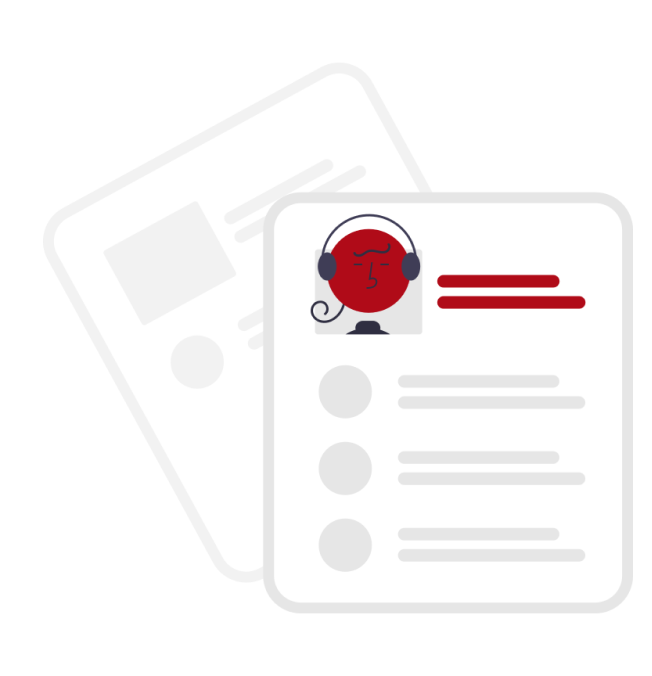

Vagas Cadastradas

Desenvolvedor Full Stack
Microsoft
Itapira,SP
Publicado:06/06/2022
Responsabilities:
- Agile Frontend Web Development
- Running and Analyzing A/B Experiments
- Desktop Application Integration
- Collaborating and communicating with partner teams
- Live Site Maintenance and Incident Management
Qualifications:
- 1+ years of client-side web development experience in TypeScript, JavaScript, and
React/Redux or similar Technologies
- HTML/CSS
- Bachelors or advanced degree in CS, engineering or related field
- Experience developing against a REST API
Nivel de Experiência:
Estágiario
Desenvolvedor Front-End
13 Candidatações
Microsoft
Itapira,SP
Publicado:06/06/2022
Responsabilities:
- Agile Frontend Web Development
- Running and Analyzing A/B Experiments
- Desktop Application Integration
- Collaborating and communicating with partner teams
- Live Site Maintenance and Incident Management
Qualifications:
- 1+ years of client-side web development experience in TypeScript